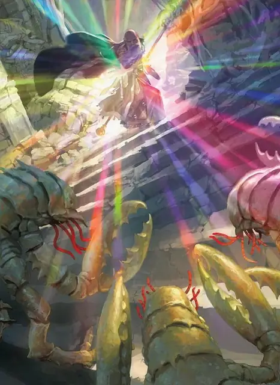

Радужные брызги
Prismatic Spray
7 уровень, Воплощение

Время сотворения Действие
Дистанция На себя
Компоненты В, С
Длительность Мгновенная
Классы Бард, Волшебник, Чародей
Восемь лучей света вылетают от вас 60-футовым Конусом. Каждое существо в этом Конусе должно совершить спасбросок Ловкости; для каждой цели бросьте к8, чтобы определить, луч какого цвета на неё воздействует, согласно следующей таблице.
| 1к8 | Луч |
| 1 | Красный. Провал спасброска: 12к6 урона Огнём. Успех спасброска: Только половина урона. |
| 2 | Оранжевый. Провал спасброска: 12к6 урона Кислотой. Успех спасброска: Только половина урона. |
| 3 | Жёлтый. Провал спасброска: 12к6 урона Электричеством. Успех спасброска: Только половина урона. |
| 4 | Зелёный. Провал спасброска: 12к6 урона Ядом. Успех спасброска: Только половина урона. |
| 5 | Голубой. Провал спасброска: 12к6 урона Холодом. Успех спасброска: Только половина урона. |
| 6 | Синий. Провал спасброска: Цель получает состояние Опутанный и совершает спасбросок Телосложения в конце каждого своего хода. Три раза преуспев в этом спасброске, существо теряет это состояние. Три раза провалив спасбросок, существо получает состояние Окаменевший до тех пор, пока не будет освобождено эффектом Высшего восстановления или аналогичным. Успехи и провалы не обязательно должны быть последовательны; отслеживайте число тех или других, пока не накопится три успеха или три провала. |
| 7 | Фиолетовый. Провал спасброска: Цель получает состояние Ослеплённый и совершает спасбросок Мудрости в начале вашего следующего хода. При успехе это состояние оканчивается. При провале состояние оканчивается, и существо телепортируется на иной план бытия (на выбор Мастера). |
| 8 | Иное. По цели попадает два луча; совершите ещё два броска по этой таблице, перебрасывая результаты «8». |